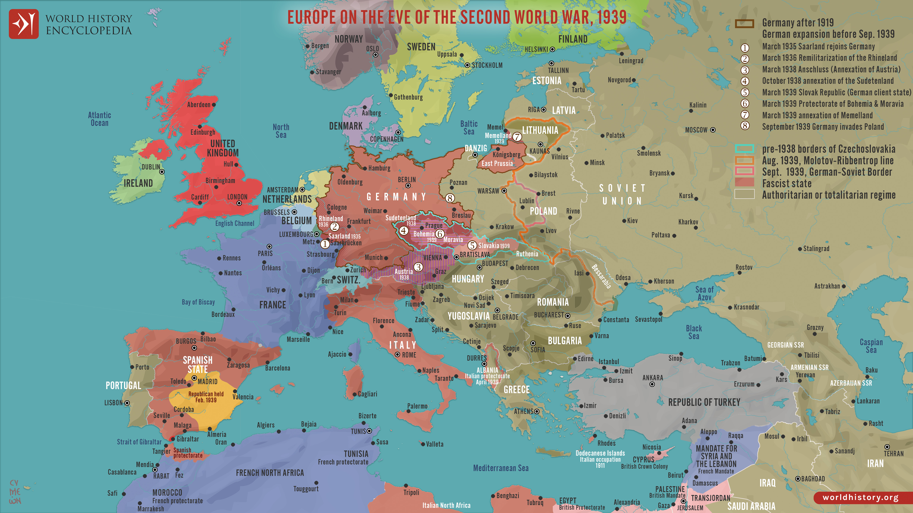
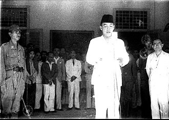

Isna Rinda Fanesia
250731601600

BAHAN AJAR DIGITAL • SEJARAH INDONESIA
1939 — 1945
Enam tahun yang mengubah dunia.
Telusuri sebab, perkembangan, titik balik, dampak, dan hubungan Perang Dunia II dengan sejarah Indonesia melalui bahan ajar interaktif.
PERJALANAN MATERI
Pelajari perang secara runtut: dari latar belakang, pecahnya perang, perkembangan global, hingga dampaknya terhadap dunia dan Indonesia.
CAPAIAN PEMBELAJARAN
Pada akhir Fase F, peserta didik mampu menganalisis peristiwa sejarah Indonesia dan dunia dengan menggunakan konsep kronologi, perubahan, keberlanjutan, sebab-akibat, serta keterkaitan antara peristiwa masa lalu dengan kehidupan masa kini.
Dalam pembelajaran Perang Dunia II, peserta didik diarahkan untuk menganalisis latar belakang, perkembangan, dan dampak Perang Dunia II serta menghubungkannya dengan perubahan tatanan dunia dan perkembangan sejarah Indonesia.
TUJUAN PEMBELAJARAN
1. Menganalisis latar belakang Perang Dunia II.
2. Menjelaskan perkembangan Perang Dunia II.
3. Mengidentifikasi tokoh dan wilayah perang.
4. Menganalisis titik balik Perang Dunia II.
5. Menganalisis dampak Perang Dunia II bagi dunia dan Indonesia.
01 — LATAR BELAKANG
Perang Dunia II tidak muncul secara tiba-tiba. Konflik ini merupakan hasil dari persoalan politik, ekonomi, ideologi, dan hubungan internasional yang berkembang setelah Perang Dunia I.
02 — PIHAK TERLIBAT
Klik setiap negara untuk memahami posisi, kepentingan, dan perannya dalam perang.
03 — PECAHNYA PERANG
Jerman di bawah Adolf Hitler menjalankan politik ekspansi. Serangan ke Polandia menjadi pemicu pecahnya Perang Dunia II di Eropa dan mengubah ketegangan internasional menjadi konflik terbuka.
04 — KRONOLOGI UTAMA
Pilih tahun untuk membaca perkembangan perang secara kronologis.
05 — TOKOH PENTING
Klik kartu tokoh untuk melihat peran, tindakan penting, dan pengaruhnya terhadap jalannya perang.
06 — WILAYAH KONFLIK
Peta teater Eropa tahun 1939. Klik pin wilayah pada peta untuk membaca peranan strategis masing-masing front dan kawasan.

07 — TITIK BALIK PERANG
Ketiga peristiwa berikut penting bukan hanya karena kemenangan militer, tetapi karena mengubah inisiatif perang dari Poros kepada Sekutu.
08 — AKHIR PERANG
09 — DAMPAK PERANG
Perang tidak hanya mengubah peta militer, tetapi juga kehidupan manusia, sistem politik internasional, ekonomi, dan masa depan bangsa-bangsa terjajah.

10 — KETERKAITAN DENGAN INDONESIA
Kekalahan Jepang mengubah situasi politik di Indonesia dan membuka peluang bagi bangsa Indonesia untuk mempercepat perjuangan kemerdekaan.
11 — KESIMPULAN
Perang Dunia II merupakan hasil dari rangkaian persoalan politik, ekonomi, ideologi, dan hubungan internasional setelah Perang Dunia I. Perang berkembang dari konflik Eropa menjadi perang global, mengalami perubahan keseimbangan kekuatan melalui berbagai titik balik, dan berakhir dengan kekalahan negara-negara Poros pada 1945.
IDENTITAS BAHAN AJAR
WARTRACE adalah bahan ajar digital interaktif untuk membantu peserta didik memahami Perang Dunia II secara runtut, kritis, dan kontekstual.
250731601600
250731602728
250731622589
250731620725
PANDUAN BELAJAR
Kenali tujuan dan alur belajar WARTRACE.
Pelajari Perang Dunia II secara bertahap.
Setiap ikon menyimpan informasi tambahan.
Ikuti perkembangan perang dari 1939–1945.
Pelajari wilayah penting dalam Perang Dunia II.
Kenali tokoh-tokoh penting dan perannya.
Pahami peristiwa yang mengubah jalannya perang.
Gunakan sumber ilmiah untuk memperdalam pemahaman.
Perkuat pemahaman melalui video pembelajaran.
PUTAR VIDEOKerjakan kuis setelah mempelajari materi.
MULAI KUISDAFTAR RUJUKAN
EVALUASI PEMBELAJARAN
Setelah mempelajari materi, gunakan kuis untuk mengukur pemahamanmu tentang Perang Dunia II.
MULAI KUIS